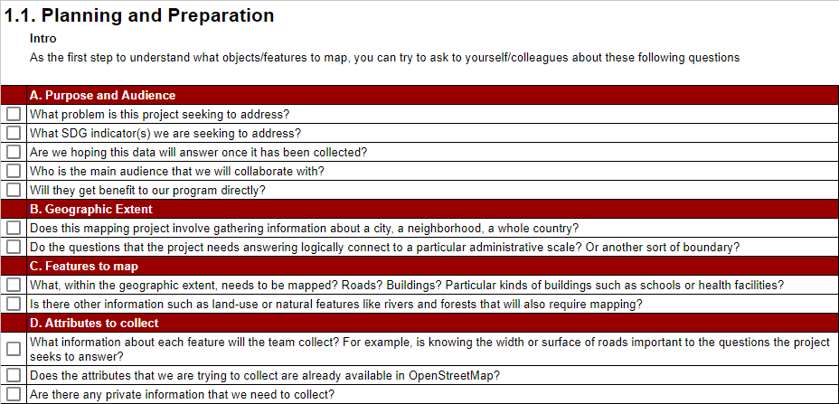

1.1 Definition des Besoins et Exigences
Objectifs du cours
Cette section comprend des questions directrices et des considérations que les chefs de projet et les communautés OSM devraient prendre en compte lors du lancement d’un projet. À la fin de cette section, vous devriez être en mesure de :
- Comprendre les facteurs à prendre en compte pour déterminer les besoins et les exigences
- Apprendre à constituer une équipe
- Apprendre à collaborer avec la communauté
Activités d’Apprentissage
Lors du lancement d’un projet de cartographie, il est important de définir la portée du projet et de comprendre le contexte plus large dans lequel les données sont nécessaires, ce qui implique de savoir comment travailler avec les parties prenantes locales et quel sera l’impact des données sur elles.
Planification et Préparation
La première étape à franchir avant de concevoir un projet de cartographie de terrain est de décider quel objet/entité à cartographier. Toutes les données collectées doivent répondre à un objectif spécifique avec un cas d’utilisation et/ou un public prévu. Cela permet non seulement de définir la portée du projet et les données collectées, mais aussi de s’assurer que le processus de collecte des données est éthique et qu’il limite la charge pesant sur les personnes et les communautés étudiées, même si c’est de manière indirecte. Une façon utile d’y réfléchir est d’essayer de poser les questions suivantes :

Source: Activity Sheet: Deciding What to Map
Les réponses à ces questions permettront de déterminer s’il existe des ensembles de données qui pourraient être utilisés, le temps et les ressources nécessaires pour mener à bien le projet. Dans certains cas, il peut être utile de mener un petit projet pilote afin de déterminer la meilleure approche pour la collecte des données et de développer une estimation du niveau d’effort requis.
Pour collecter des données de qualité, vous devez utiliser un modèle de données bien défini. Un modèle de données reflète les informations que vous souhaitez capturer. Après avoir établi un modèle de données solide, il est important de créer des formulaires logiques de collecte de données sur le terrain qui capturent les données que vous recherchez de la meilleure façon possible.
Des exemples de modèles de données des Objectifs de Développement Durable (ODD) pour OpenStreetMap peuvent être trouvés dans la partie 2
Coordination avec l’administration locale
Dans de nombreux cas, les équipes de cartographie devront être munies d’une lettre d’autorisation ou d’une autre forme de permission délivrée par les autorités locales afin de prouver leur crédibilité et de réduire les conflits potentiels qui pourraient survenir lors de la collecte des données sur le terrain. Nous recommandons aux organisations et aux communautés de demander cette lettre aux autorités compétentes bien avant les activités de cartographie prévues, afin de réduire les risques de retard.
L’identification et la prise de contact avec des organisations partenaires travaillant localement dans la zone que vous envisagez de cartographier sont essentielles pour garantir l’adhésion de la population locale, la réussite du projet et sa durabilité. Si la prise de contact peut se faire par courrier électronique ou par lettre détaillant vos intentions, les rencontres en personne ont plus de poids et permettent de développer des relations plus solides.
Constitution d’une équipe de cartographe
Dans la plupart des cas, les Organisations Non Gouvernementales et les agences gouvernementales recruteront des cartographes au sein de leurs propres équipes. Cependant, les organisations devraient considérer les avantages de faire appel à des cartographes issus d’organisations partenaires et de communautés locales. Lorsque l’on travaille dans un environnement de réfugiés, il est particulièrement important d’intégrer les réfugiés (et les membres de la communauté d’accueil) dans le processus de cartographie. En intégrant les communautés locales, les bénéficiaires et les partenaires dans l’équipe de cartographie, les activités de cartographie participative :
- Accroissent la participation et la représentation au niveau local
- Permettent aux communautés de représenter directement leurs besoins et leurs valeurs.
- Incorporent les connaissances et les perspectives locales qui pourraient ne pas être accessibles autrement.
- Donnent aux membres des communautés locales les moyens de développer leurs compétences.
| 💡 Le saviez vous? 💡 |
|---|
| Traditionnellement, le terme “bénéficiaire” n’est utilisé que pour décrire les personnes touchées par une crise. Aujourd’hui, il est largement reconnu que les bénéficiaires devraient également participer activement à la détermination de leur propre destin. C’est également l’essence de la cartographie participative : les bénéficiaires doivent être des acteurs et des partenaires des projets humanitaires. |
| Paiement | En règle générale, il est bon de couvrir les frais des participants actifs. Par exemple, si des bénévoles rejoignent votre équipe en tant que cartographes de terrain, ils doivent recevoir des indemnités journalières pour couvrir les frais de transport et de nourriture. Les projets reposent sur les données collectées par ces bénévoles, qui font donc partie intégrante du travail et ne doivent pas être traités à la légère. Bien entendu, les volontaires non rémunérés peuvent et doivent également participer activement, mais les organisations doivent déterminer à quel moment la limite est franchie pour éviter l’exploitation. Enfin, il faut garder à l’esprit que même des paiements apparemment minimes peuvent affecter la dynamique du pouvoir dans les communautés et les foyers de réfugiés. |
| Genre | Les organisations doivent être sensibles au genre, mais éviter de l’utiliser comme critère pour déterminer les participants, conformément au principe de non-discrimination. Au sein des familles, le fait de payer un membre et pas un autre peut avoir des conséquences involontaires, positives ou négatives. |
Lorsqu’il s’agit de choisir les personnes avec lesquelles travailler, il convient de tenir compte des principes de base suivants :
| Communauté | Motivation | Non-discrimination |
|---|---|---|
| La participation active de la population touchée est essentielle pour fournir une assistance qui répond au mieux à ses besoins. Le premier critère de sélection des participants est l’appartenance à la communauté locale. Les organisations non gouvernementales devraient également envisager d’intégrer le personnel du gouvernement local et/ou national afin d’accroître l’adhésion et l’utilisation des données. Les organisations gouvernementales qui mènent des activités de cartographie et d’enquête devraient envisager d’intégrer du personnel qui n’est généralement pas impliqué dans les activités géospatiales, ainsi que le personnel d’organisations non gouvernementales partenaires. Quoi qu’il en soit, la participation de la population touchée doit être une priorité absolue. | Les participants doivent avoir de bonnes raisons de travailler. Les motivations varient, mais l’un des facteurs les plus importants est l’investissement émotionnel dans un projet. Le sentiment de progresser dans un travail utile est un puissant facteur de motivation. | Personne ne doit faire l’objet d’une discrimination pour quelque motif que ce soit, y compris l’âge, le sexe, la race, la couleur, l’origine ethnique, l’orientation sexuelle, la langue, la religion, l’handicap, l’état de santé, les opinions politiques ou autres, l’origine nationale ou sociale. Aucun de ces éléments ne doit constituer un critère de sélection des participants. Prendre en considération les dynamiques ou pratiques sociales, culturelles et politiques préexistantes susceptibles de marginaliser ou d’exploiter certains groupes. |
Une fois votre équipe constituée, vous devez également la former afin qu’elle se familiarise avec les outils que vous allez utiliser. Tenez compte des conseils suivants lors de la formation de votre équipe :
- Compétences techniques - Certains groupes auront besoin de plus de temps que d’autres pour apprendre une application ou un outil.
- Outils à utiliser pour le projet - Les outils utilisés déterminent le temps et le niveau de compétence exigés de votre équipe. En outre, le nombre d’outils pour lesquels vous prévoyez de former les membres de l’équipe a une incidence sur la durée de la formation et le temps nécessaire à la maîtrise d’une compétence ou d’un outil.
- Session pratique - La formation des équipes aux outils par le biais d’approches pratiques, y compris la réalisation d’essais sur le terrain, augmente considérablement le taux de réussite de la maîtrise et améliore la qualité des données. Dans la mesure du possible, toutes les formations devraient comporter une session pratique.
- Accès constant à l’internet et à l’électricité - Certains outils nécessitent l’utilisation de l’internet et d’un ordinateur pour la formation (par exemple, la cartographie avec iD/JOSM).
Entrée dans la Communauté
L’entrée dans la communauté est le processus qui consiste à initier, nourrir et entretenir une relation afin de garantir la participation et l’intérêt d’une communauté pour un programme. Qu’il s’agisse de s’engager avec des communautés de réfugiés et d’accueil dans une zone d’installation ou avec des communautés locales dans une capitale, il existe quelques recommandations et questions pratiques qui peuvent guider votre équipe dans l’établissement d’une relation avec un groupe donné et dans la préparation de la mise en œuvre d’une activité au sein d’une communauté.
La chose la plus importante à garder à l’esprit est la manière dont les individus peuvent participer au travail en tant que membres de projets. Il faut leur donner la possibilité de s’approprier le projet. Avant de lancer un projet, les objectifs et la stratégie doivent être partagés avec les membres de la communauté. Ils doivent donner leur avis et celui-ci doit être pris en compte. Si certains membres de la communauté ne se voient pas confier un rôle dans le projet, tant en termes de stratégie que de mise en œuvre, vous risquez de rencontrer des problèmes par la suite.
| 💡 Le saviez vous? 💡 |
|---|
| Dans le contexte du travail avec les réfugiés qui souvent ont l’habitude de voir les nouveaux projets avec scepticisme, il est particulièrement important que votre approche pour engager et informer ces groupes du travail à venir soit prioritaire par rapport à la mise en œuvre de l’activité et à l’obtention de résultats. De nombreuses organisations et personnes profitent des crises humanitaires pour exploiter les gens - que ce soit délibérément ou par incompétence. Il est essentiel d’instaurer la confiance et le respect entre l’organisation et la communauté. Bien que protégés par le droit international, les réfugiés dans les pays d’accueil sont soumis aux autorités municipales et nationales. La présence de réfugiés peut exercer une pression sur les communautés d’accueil, ce qui alimente souvent les préjugés. Par conséquent, le dernier aspect d’une entrée réussie dans la communauté est la prise en compte des préoccupations de la communauté d’accueil |
Astuces:
- Organiser une réunion de consultation pour recueillir les commentaires des réfugiés.
- Inclure un membre de la communauté dans l’équipe.
- Créer un groupe WhatsApp pour communiquer rapidement
- Articuler les avantages pour la communauté d’accueil
- Établir des relations et travailler par l’intermédiaire de partenaires déjà basés dans la communauté pour faciliter la mise en œuvre de l’activité et permettre l’intégration dans les initiatives existantes.
[Quiz] Testez vos connaissances
1. Lorsque vous souhaitez planifier votre premier projet de cartographie sur le terrain, quelle est la première étape à franchir ?
a. Comprendre le problème que le projet tente de résoudre
b. Définir les outils que vous utiliserez
c. Préparer un rapport (mensuel ou trimestriel)
d. Organiser des sessions de formation avec des fonctionnaires et des responsables communautaires
2. Pourquoi faut-il inclure les communautés locales, les bénéficiaires et les partenaires dans nos activités de cartographie participative :
a. Identifier immédiatement le point focal
b. Parce que notre donateur exige de travailler avec eux
c. Pour responsabiliser la communauté locale et comprendre ses besoins et ses valeurs
d. Réduire considérablement le budget du projet
Réponses: 1. A | 2. C
Liste de contrôle des activités
À la fin de cette session vous comprenez déjà:
- Les éléments à prendre en compte lors de la planification et de la préparation du projet sur le terrain.
- La constitution d’une équipe de cartographie efficace
- Comment établir des relations efficaces avec la communauté